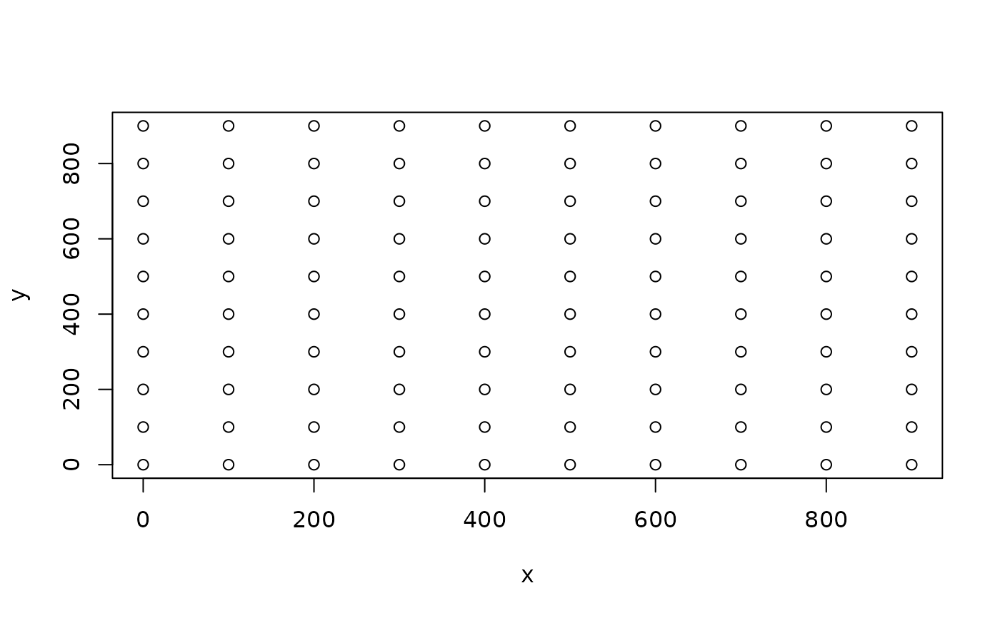

Calculate the euclidian distances beween coordinates for all coordinates within the cutoff.
Arguments
- x
Projected x coordinate
- y
Projected y coordinate
- cutoff
The distance cutoff
- min_dist
The minimum distance to separate two nodes. If the coordinates for two nodes are identical, the min_dist must be assigned or an error is raised. Default is
NULL, i.e., to raise an error.- na_fail
A logical indicating whether missing values in
xoryshould raise an error or assign zero to all distances involving missing values. Default isTRUE, i.e., to raise an error.
Examples
## Generate a grid 10 x 10 and place one node in each cell
## separated by 100m.
nodes <- expand.grid(x = (0:9) * 100, y = (0:9) * 100)
plot(y ~ x, nodes)

## Define the cutoff to only include neighbors within 300m.
d <- distance_matrix(x = nodes$x, y = nodes$y, cutoff = 300)
## View the first 10 rows and columns in the distance matrix
d[1:10, 1:10]
#> 10 x 10 sparse Matrix of class "dgCMatrix"
#>
#> [1,] . 100 200 300 . . . . . .
#> [2,] 100 . 100 200 300 . . . . .
#> [3,] 200 100 . 100 200 300 . . . .
#> [4,] 300 200 100 . 100 200 300 . . .
#> [5,] . 300 200 100 . 100 200 300 . .
#> [6,] . . 300 200 100 . 100 200 300 .
#> [7,] . . . 300 200 100 . 100 200 300
#> [8,] . . . . 300 200 100 . 100 200
#> [9,] . . . . . 300 200 100 . 100
#> [10,] . . . . . . 300 200 100 .